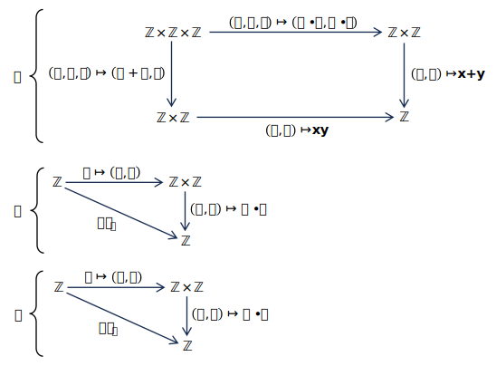

Category Theory for the Sciences
科学のための圏論
Exercise 3.1.1.8. 演習 3.1.1.8.
Let \(\mathbb{Z}\) denote the set of integers, and let \(+: \mathbb{Z}×\mathbb{Z}→\mathbb{Z}\) denote the addition function and \(･: \mathbb{Z}× \mathbb{Z}→\mathbb{Z}\) denote the multiplication function. Which of the following diagrams commute?
\(\mathbb{Z}\) を整数の集合とし、\(+: \mathbb{Z}×\mathbb{Z}→\mathbb{Z}\) を加算関数、\(･: \mathbb{Z}× \mathbb{Z}→\mathbb{Z}\) を乗算関数とします。次の図のうち、可換なのはどれですか？

●解答
-
a. This diagram does not commute because \(a･b+a･c \neq (a+b)･c\), at least for some integers \(a, b, c \in \mathbb{Z}\), e.g., \(a=0, b=1, c=1\).
この図式は可換ではありません。なぜなら、少なくともいくつかの整数 \(a, b, c \in \mathbb{Z}\) に対して \(a･b+a･c \neq (a+b)･c\) が成り立つからです。例えば、\(a=0, b=1, c=1\) の場合などが挙げられます。
-
b. This diagram does not commute because \(x･0 \neq x\), at least for some integers \(x \in \mathbb{Z}\).
この図式は可換ではありません。なぜなら、少なくとも一部の整数 \(x \in \mathbb{Z}\) に対して \(x･0 \neq x\) だからです。
-
c. This diagram commutes. For every integer \(x \in \mathbb{Z}\), we have \(x･1=x\).
この図式は可換である。すべての整数 \(x \in \mathbb{Z}\) に対して、\(x･1=x\) が成り立つ。